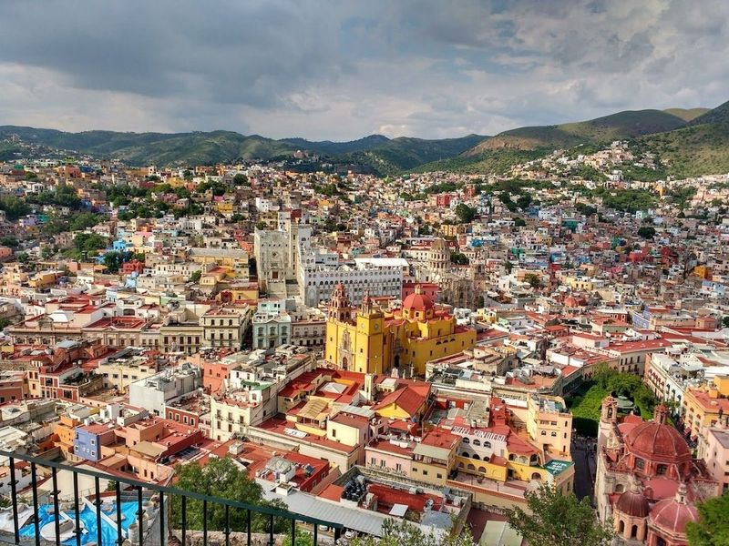
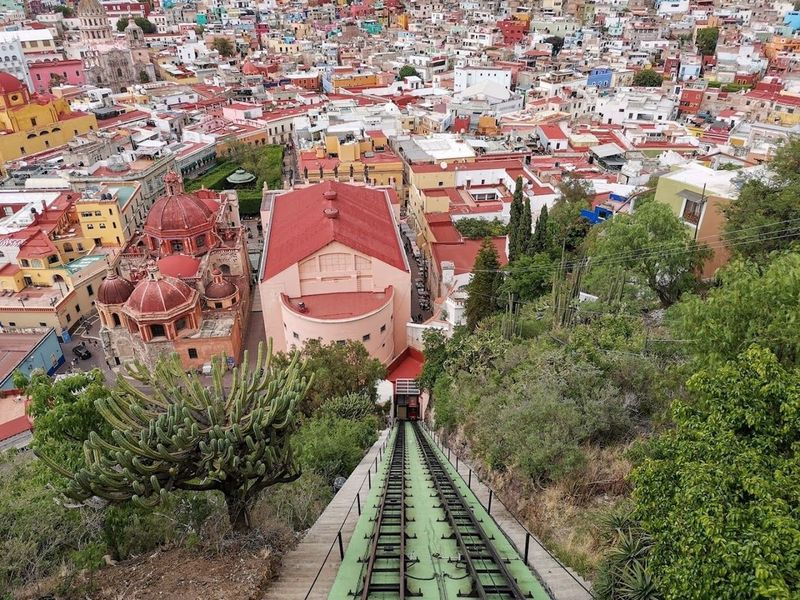
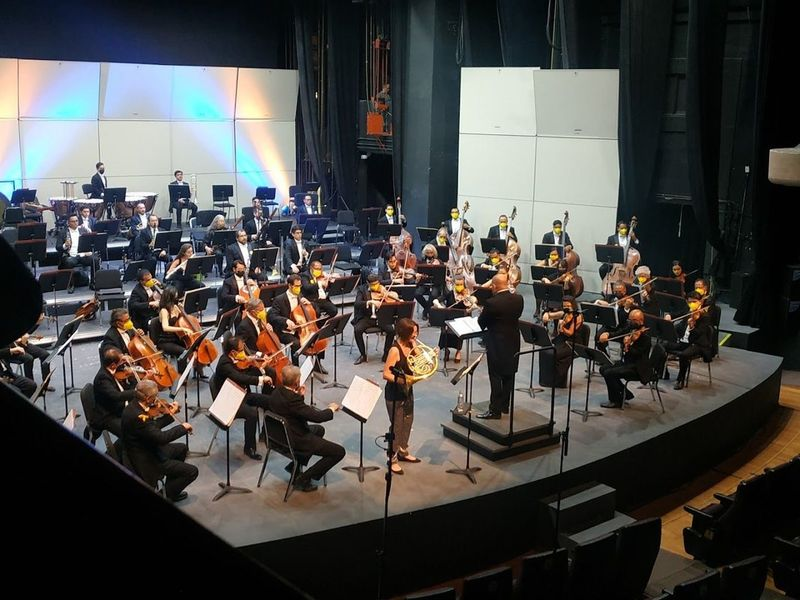
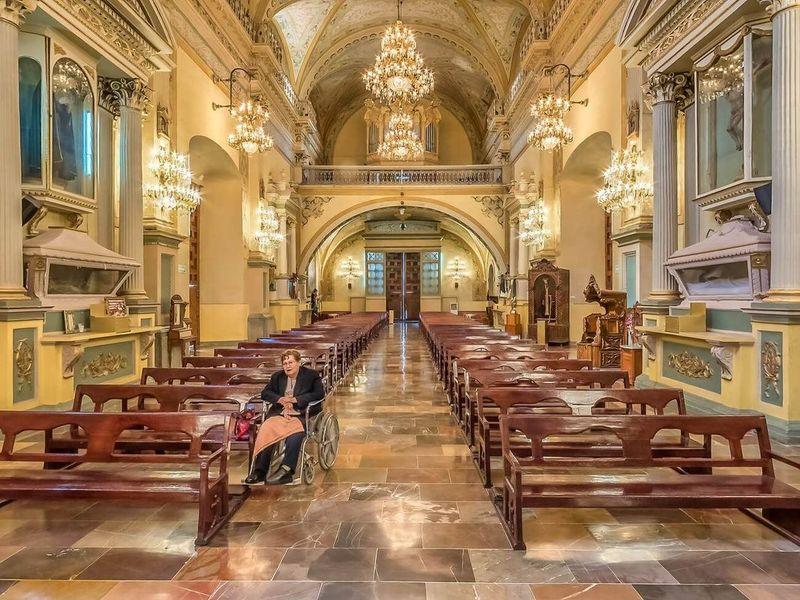
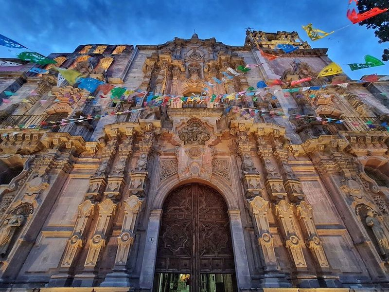
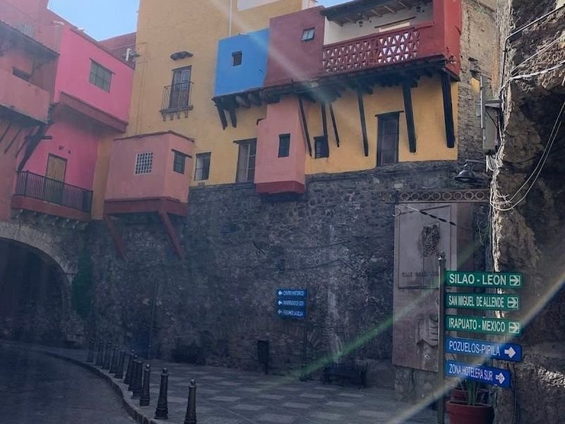
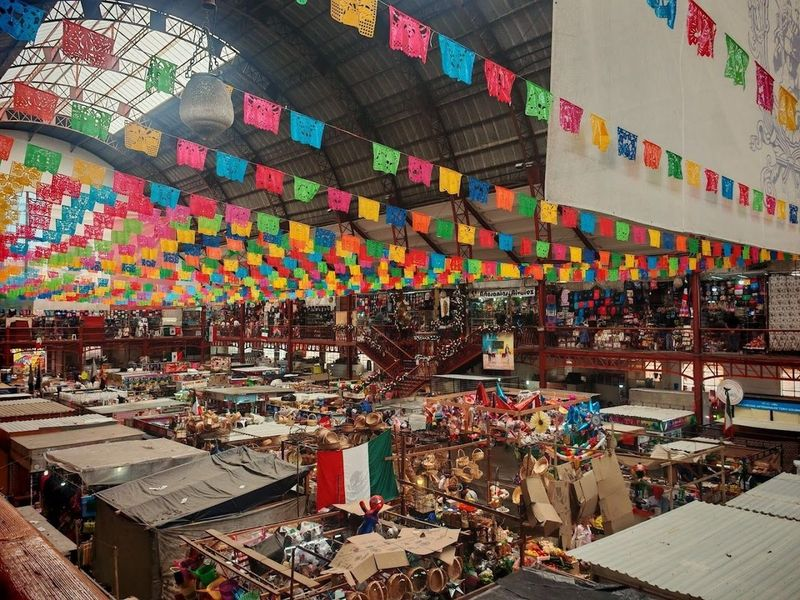
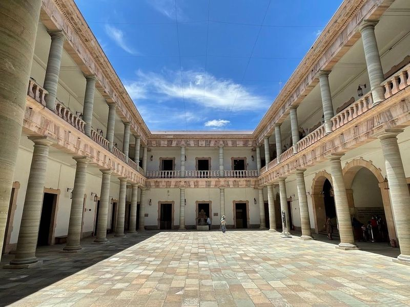
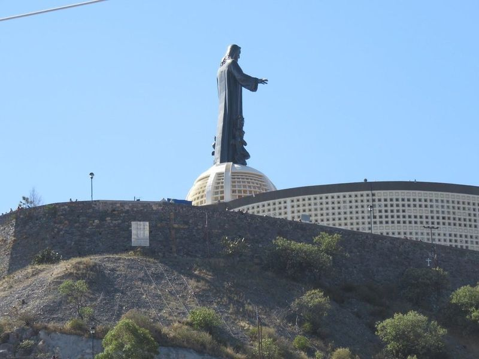
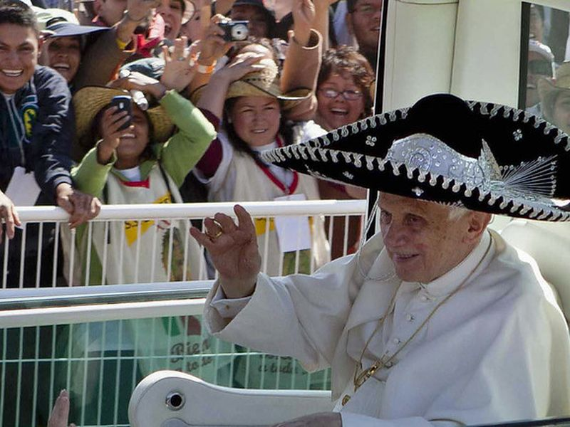

Explore Guanajuato
A Brief History
Guanajuato's silver mines enriched colonial Spain from the eighteenth century, funding baroque churches and university colleges in steep ravines. Alleyways, theatres, and Independence-era sites record how mining wealth shaped central Mexican urban life. Subterranean streets and Cervantino festival venues animate the silver-city ravines above central Mexico.
Attractions Map
Top Sights & Activities

Monumento Al Pipila
The Monumento Al Pipila is a tribute to a local hero of the War of Independence, situated on a hill that offers panoramic views of Guanajuato. Visitors can reach the monument by climbing stairs or taking the city's old funicular from Teatro Juarez. The colossal statue depicts Pipila holding a torch with his right arm raised and left arm resting on a stone slab.

Funicular
When visiting Guanajuato, a ride on the funicular is a must-do experience. The funicular takes you up to the Mirador Panoramica, offering views of the city with its colorful houses and historic architectural gems. At sunset, the city lights up and the sky casts beautiful pink hues over everything. Another way to enjoy views is by visiting the Monumento al Pipila, which commemorates local hero Juan Jose Martinez.

Teatro Principal
Teatro Principal is a charming and unique theater In Guanajuato. The venue offers a variety of performances, including classic musical shows and stage productions. Visitors appreciate the beautiful architecture and excellent acoustics of the theater, making it an ideal location for enjoying live music events and symphonies. Additionally, there are small galleries and museums nearby for art enthusiasts to explore.

Basílica Colegiata de Nuestra Señora de Guanajuato
The Basílica Colegiata de Nuestra Señora de Guanajuato is a must-visit 17th-century church in the heart of Guanajuato. This colorful red-and-yellow basilica stands out as the most prominent church in the city, with its striking architecture easily visible from various vantage points. Inside, visitors can admire a jewel-covered statue of the Virgin Mary, which dates back to the 8th century and holds historical significance.

Templo de la Compañía de Jesús Oratorio de San Felipe Neri
Nestled in the heart of San Miguel, the Templo de la Compañía de Jesús Oratorio de San Felipe Neri is a example of Churrigueresque architecture, built between 1734 and 1765. This gothic-style Catholic church captivates visitors with its and ornate exterior that spans an entire city block. As you step inside, be greeted by equally interiors adorned with intricate details.

Cjon. del Beso
Cjon. del Beso, also known as the Alley of the Kiss, is a narrow alleyway located next to Plaza de los Angeles in Guanajuato, Mexico. This famous spot is steeped in a tragic love story that draws countless couples to visit and share a kiss on its third stair for guaranteed 7 years of happiness according to local legend. The close proximity of the walls and balconies creates an intimate atmosphere that adds to the allure of this magical place.

Mercado Hidalgo
Mercado Hidalgo is a historic market housed in a cast-iron building dating back to the 1910s. Originally a train station, it now hosts a bustling collection of stalls selling everything from food and regional specialties to straw baskets and hats. Named after Mexican priest Miguel Hidalgo, the market offers an authentic taste of local cuisine with traditional dishes served at various food stands.

Alhóndiga de Granaditas Regional Museum
The Alhóndiga de Granaditas Regional Museum is a captivating blend of art and history, housed in a former granary that played a pivotal role in Mexico's War of Independence. This historic secular building, completed in 1809, served as a granary and marketplace before becoming a fortress overrun by troops led by Miguel Hidalgo. The museum commemorates this event with a statue overlooking the city from a nearby hillside park.

Shrine of Christ the King
The Shrine of Christ the King is a destination perched atop a hill, offering visitors panoramic views of Silao and Guanajuato. Dominated by a magnificent 65-foot bronze statue of Christ and an art deco sanctuary, this site is not only visually captivating but also spiritually enriching. Many come here to pray, reflect, or shop for religious souvenirs in a serene atmosphere that fosters devotion and gratitude.

Bicentennial Park Silao
Bicentennial Park Silao is listed among principal sites for Guanajuato within Mexico. Municipal and regional heritage listings document its place in the historic centre and travellers routes through Guanajuato. Bicentennial Park Silao is listed among principal sites for Guanajuato within Mexico.